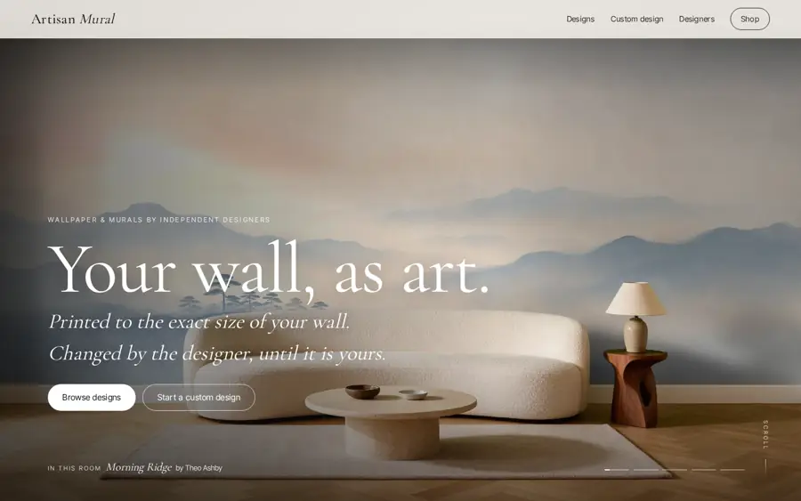
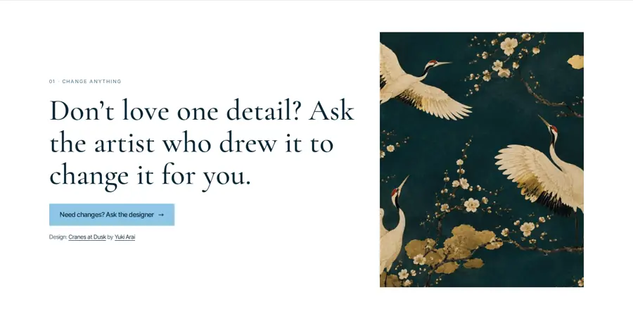
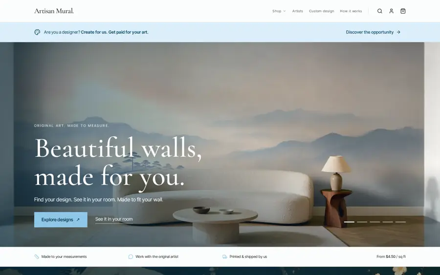
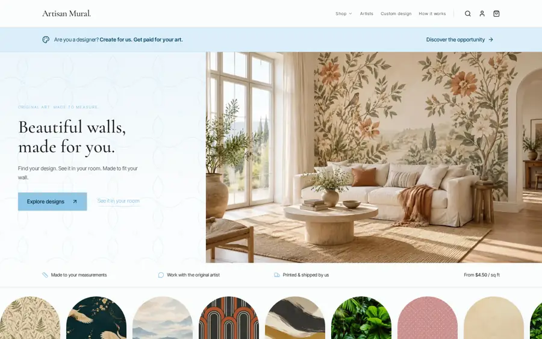
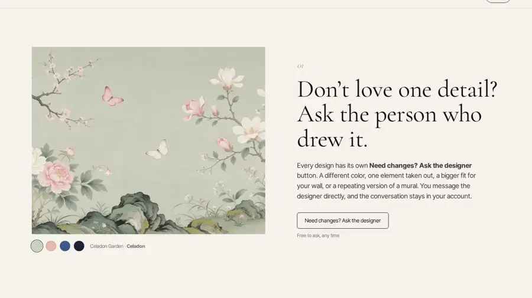
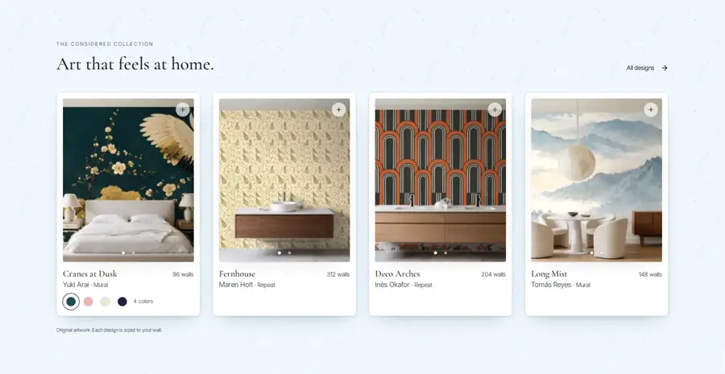
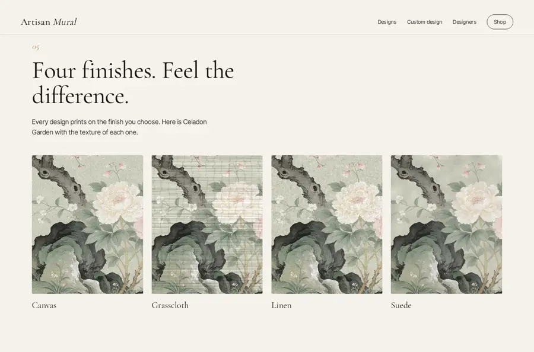

Pick the parts you like.
Open any version, then tell me the parts you want, for example Hero B + Story A + Shop A. Nothing here is on your live site.
The full versions
Tap to open the whole page.

Version 1 · v3 conceptFull-screen rooms that change every few seconds, a long scrolling story on a white page, and the new concept sections.Open →Version 2 · v4 · words on wallpaperYour current site’s layout, menu, designs and footer, plus the big room photo. The 5 specialties are written on real wallpaper designs.Open →
Version 3 · v4 · words on whiteSame as version 2, but the words are on white with the design beside them.Open →The parts
Each part has a letter. Tap to see it on its page.
Hero AFull-screen room photo (v3). Rooms change every few seconds; lines appear as you scroll.Open →

Hero BBig room photo with your current words and buttons (v4). The next part already shows at the bottom and moves the moment you scroll.Open →
Hero CYour current live hero: words on the left, picture on the right.Open →Story A5 specialties, one per wallpaper design. Words appear as you scroll and each sentence finishes in one scroll.Open →Story BSame 5 specialties on white, with the design beside the words.Open →
Story CThe v3 story: a long scrolling paragraph on white, then 7 numbered feature sections.Open →
Shop AYour current site’s sections: designs, before/after room slider, categories, meet the artist, how it works, custom design.Open →
Shop BThe v3 sections: four finishes, custom design, collection, how it works.Open →